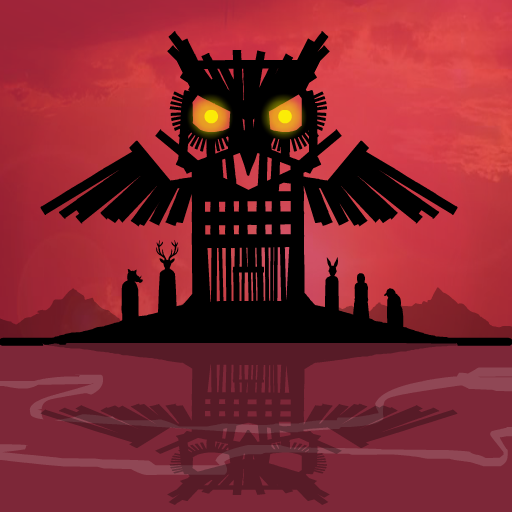

“Stop the ten plagues.”
Rusty Lake Paradise é uma aventura de puzzles no estilo point-and-click, desenvolvida pela Rusty Lake. A história acompanha Jakob Eilander, o filho mais velho de uma família que vive na misteriosa Paradise Island. Depois da morte de sua mãe, a ilha é atingida por uma série de acontecimentos sobrenaturais relacionados às Dez Pragas do Egito. Para descobrir o que aconteceu com sua mãe e acabar com a maldição, Jakob precisa retornar à ilha, explorar seus diferentes ambientes e participar de estranhos rituais familiares. O jogo combina investigação, exploração e enigmas com uma atmosfera cada vez mais sombria e perturbadora.
A história começa quando Jakob Eilander, o filho mais velho da família Eilander, retorna para Paradise Island após receber a notícia da morte de sua mãe. Porém, a ilha está longe de ser um lugar tranquilo. Depois da morte misteriosa de sua mãe, uma sequência de acontecimentos sobrenaturais começa a atingir a ilha. Esses acontecimentos estão relacionados às Dez Pragas do Egito. Jakob precisa explorar a ilha e encontrar as memórias escondidas de sua mãe enquanto tenta descobrir o verdadeiro significado dos acontecimentos. Para avançar, ele precisa interagir com os membros de sua própria família e participar de diversos rituais. Quanto mais Jakob descobre sobre a ilha e sua família, mais evidente fica que a morte de sua mãe está ligada a algo muito maior. A história de Paradise também ajuda a expandir a narrativa da família Eilander, que possui uma conexão importante com a história de Rusty Lake.